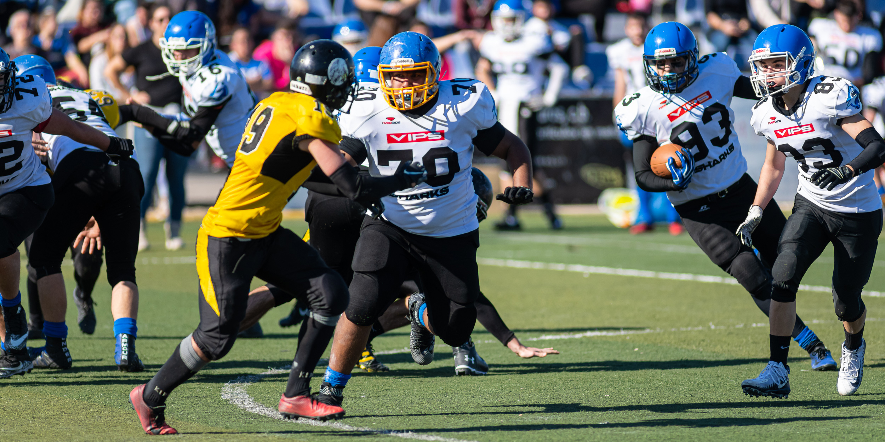
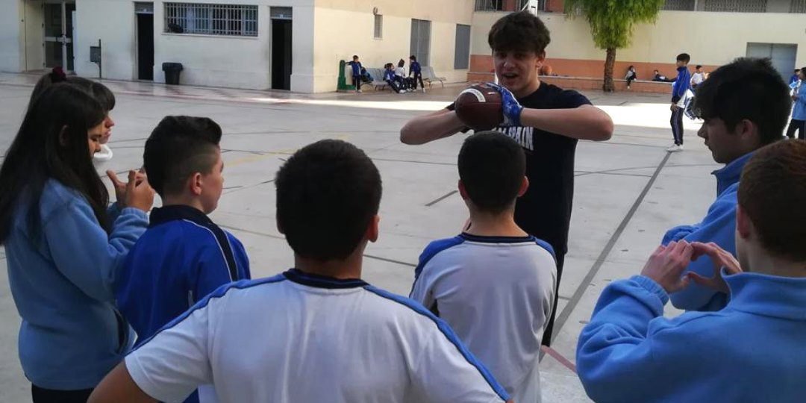

ALC Sharks - VLC Firebats LVFA 26/01/2019
Partido de ida contra Valencia Firebats disputado en Alicante. ¡Qué ganas tenemos de volver a los game day!

¡Alicante Sharks en los colegios!
Antes de la cuarentena, pudimos participar en varios colegios enseñándoles qué es el fútbol americano, sus fundamentos básicos y algunos ejercicios.
Lee mas